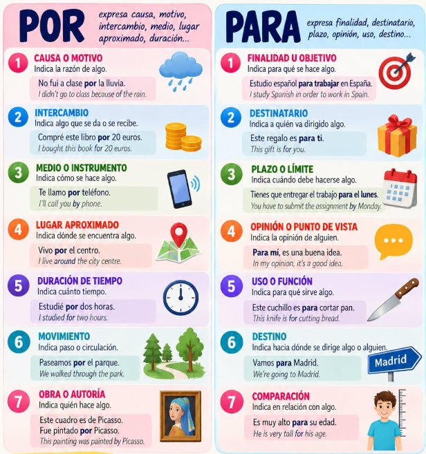

1.
¿Por qué motivo principal organizó la junta comunal el bazar en el vecindario?
El Bazar de la Cuadra: Dominando Por y Para
Español B2
Una animada jornada comunitaria en Medellín donde dos amigos organizan un bazar solidario mientras desentrañan las diferencias esenciales entre «por» y «para».
INSTRUCCIONES
Este método de aprendizaje de idiomas está sumamente centrado en el estudiante, lo que significa que como profesor no se requiere ninguna preparación previa. Esto es perfecto para intercambios lingüísticos (tándem) o plataformas como Preply o italki, donde los profesores a menudo enseñan como una actividad secundaria y pueden tener decenas de estudiantes. El estudiante utiliza la IA para crear actividades interactivas en las que trabaja por su cuenta antes de la clase y luego junto con el profesor durante la sesión, donde el enfoque principal es la conversación. El estudiante y el profesor eligen juntos los temas de las actividades en función de intereses compartidos que resulten enriquecedores para ambos.
Profesor
- Aunque no se necesita ninguna preparación por tu parte, puedes ayudar al estudiante durante la clase de muchas maneras.
- Lleva una lista de los errores que comete el estudiante durante la clase y envíasela después. Puede ser útil corregirle de vez en cuando durante la conversación en vivo, pero contar con una lista de errores después de clase, cuando tiene tiempo para investigar, organizar y reflexionar sobre ellos, es mucho más útil para ayudarle a superarlos con el tiempo.
- Interactúa constantemente con el estudiante: pídele que aclare lo que no esté claro, comparte tus propias historias y opiniones, interrúmpele, hazle preguntas, desafía sus respuestas y debate los temas a fondo. Prefiere preguntas con «cómo» y «por qué» sobre preguntas con «qué», «cuándo» o de «sí/no», las cuales obligan al estudiante a dar respuestas más largas y profundas.
- El objetivo es mantener el porcentaje de habla de estudiante/profesor en un 50%/50%. La plataforma de video de Preply reporta esta estadística hacia el final de la clase, lo cual es muy útil.
- El objetivo no es terminar la actividad a toda costa, sino mantener una interacción constante con el estudiante a un nivel que le suponga un reto y le ayude a mejorar, pero sin abrumarle.
- Hoy en día, gracias a la IA y los recursos en línea, los estudiantes tienen todo lo necesario para aprender idiomas por su cuenta. Lo que necesitan de ti en clase es el desafío constante de la interacción en tiempo real en la conversación, y después una lista de los errores cometidos durante la clase.
Estudiante
- Crea una actividad para tu próxima clase en tu editor con la habilidad, ej.: «/create-learning-activity on Argentina in Spanish B1».
- Con la mayoría de los modelos de IA, esto tardará entre 5 y 10 minutos en crearse.
- Una vez lista, lee el texto con la ayuda de Google Traductor hasta el punto de poder leerlo de nuevo en el idioma meta y comprenderlo en general.
- Realiza todos los ejercicios para que tengas una comprensión general tanto de las preguntas como de las respuestas, hasta el punto de poder responderlas en vivo en clase.
- Prepara el vocabulario y las estructuras que necesitarás para debatir el texto y los ejercicios con tu profesor en clase.
- Vuelve a leer el texto, esta vez investigando detalles y añadiendo capturas de imágenes de Internet (consulta las instrucciones para una guía técnica).
- Haz commit de la actividad y las imágenes a tu repositorio de GitHub, lo cual la publicará en tu sitio de Vercel.
- En clase, trabaja en cada sección con tu profesor, debatiendo los temas a medida que surjan de manera natural.
- El objetivo no es terminar la actividad en clase, sino mantener una conversación abierta e interesante con tu profesor durante toda la sesión con un 50%/50% de participación para una práctica sólida tanto de expresión oral como de comprensión auditiva.
- Antes de que termine la clase, acuerda con tu profesor el tema de la actividad para tu próxima clase.
1 Imágenes clic para ampliar

2 Lectura leer en voz alta
El motivo y el destino
En un alegre barrio de Medellín, Mateo y Valentina compartían un reconfortante tintico en la víspera del gran bazar solidario. Aquel festival había sido convocado por la junta comunal para financiar las mejoras de la biblioteca infantil del vecindario. Mientras pegaban carteles informativos por las paredes de cada esquina, Mateo confesó con humor su constante inseguridad al redactar los letreros. Valentina sonrió y decidió aclararle el panorama: empleamos «por» cuando expresamos la causa profunda, el motivo o la razón de actuar, como movilizarse con entusiasmo por amor al barrio; por el contrario, reservamos «para» para señalar el propósito futuro, la meta concreta o el beneficiario, tal como conseguir útiles escolares para los pequeños lectores. Además, Valentina añadió que «por» sirve para indicar el medio de comunicación o transporte, como difundir la invitación por redes sociales, mientras que «para» expresa una opinión personal, como cuando afirmamos que para nosotros la educación es prioritaria.
El tiempo, los plazos y el recorrido
Para dejar la logística completamente lista antes de la apertura, a ambos muchachos les tocó madrugar con energía el sábado por la mañana. Durante tres horas recorrieron paso a paso la cuadra central, coordinando los puestos y transportando carpas bajo un cielo despejado. «Observa bien la diferencia espacial», señaló Valentina mientras avanzaban con prisa por el parque: «nos movemos por estas calles porque son la vía por donde transitamos, pero caminamos hacia la cancha deportiva para instalar la tarima principal». Del mismo modo, el montaje demandó paciencia por el intenso calor del mediodía, aunque la hora límite para inaugurar el bazar estaba programada para las dos de la tarde.
Intercambios, tareas y puntos de vista
Para sortear el embotellamiento vehicular, un vecino voluntario tomó un oportuno atajo por un sendero estrecho y llegó con el equipo de sonido contratado por los organizadores. El éxito colectivo dependía de un riguroso reparto de tareas distribuido para que cada quien colaborara sin agotarse. En varios toldos se fomentó el trueque comunitario, cambiando libros usados por frutas frescas traídas del campo. Las monedas entregadas con generosidad por los visitantes tintineaban sin cesar en la alcancía colocada junto a la entrada. Al finalizar el animado recorrido por los puestos, los anfitriones ofrecieron un delicioso agasajo con chocolate y buñuelos recién hechos para atender a la cuadrilla. Para Mateo, la distinción lingüística ya no albergaba misterio: todo el esfuerzo brindado por el vecindario había asegurado el abundante recaudo necesario para abrir las puertas de un espacio cultural digno.
3 Vocabulario arrastrar y soltar
4 Comprensión opción múltiple
2.
Según la explicación que Valentina le da a Mateo, ¿cuál es la diferencia clave entre «por» y «para»?
3.
En la frase «caminamos hacia la cancha deportiva para instalar la tarima», ¿por qué se utiliza la preposición «para»?
4.
¿Qué solución creativa implementaron los asistentes en varios puestos para conseguir bienes sin dinero?
5.
En la oración «el montaje demandó paciencia por el intenso calor del mediodía», ¿qué función cumple «por»?
5 Preguntas responder y debatir
- ¿Qué estrategias o reglas mnemotécnicas utilizas tú para recordar cuándo usar «por» y cuándo usar «para» en español al hablar o escribir?
- ¿En qué causas sociales o iniciativas de tu comunidad o vecindario te gustaría participar como voluntario, y por qué razones?
- ¿Qué opinas de alternativas económicas comunitarias como el trueque en comparación con las transacciones comerciales convencionales?
- Si tuvieras que organizar un evento solidario en tu barrio para el próximo mes, ¿qué actividades prepararías y para quiénes estaría destinado?